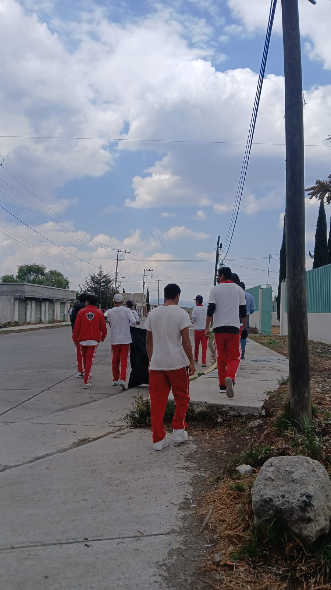
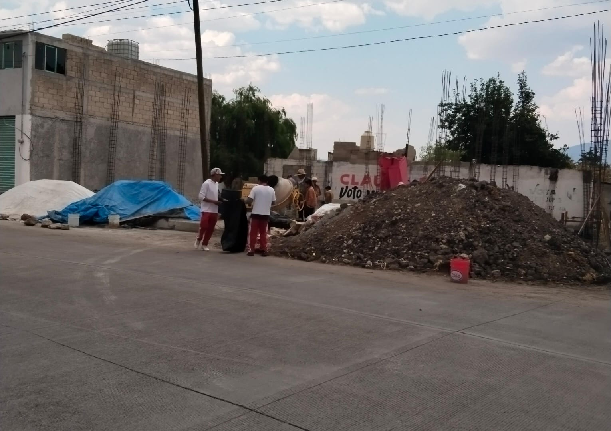
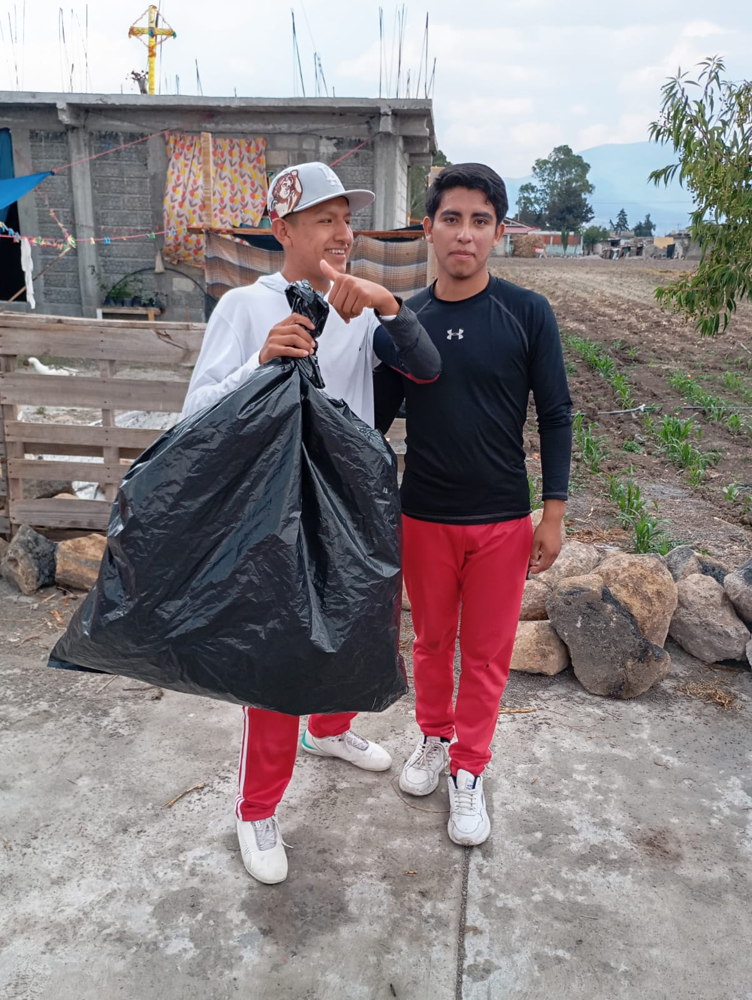

FECHAS FUTURAS
EL DIA 14 E MAYO DEL 202S, se relizo una campaña para recoleccion de basura en la comunidad de San Cristobal de los Baños.Lo que parecia imposible de hacer fue posible gracias al apoyo de los estudiantes del COBAEM, especialmente el grupo 603.


